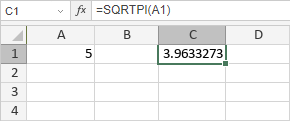

SQRTPI funkcija
SQRTPI funkcija je jedna od matematičkih i trigonometrijskih funkcija. Koristi se za vraćanje kvadratnog korena od konstante pi (3.14159265358979) pomnožene sa zadatim brojem.
Sintaksa
SQRTPI(number)
SQRTPI funkcija ima sledeći argument:
| Argument | Opis |
|---|---|
| number | Broj kojim želite da pomnožite konstantu pi. |
Napomene
Ako je vrednost number negativna, funkcija vraća grešku #NUM!.
Kako primeniti SQRTPI funkciju.
Primeri
Slika ispod prikazuje rezultat koji vraća SQRTPI funkcija.
